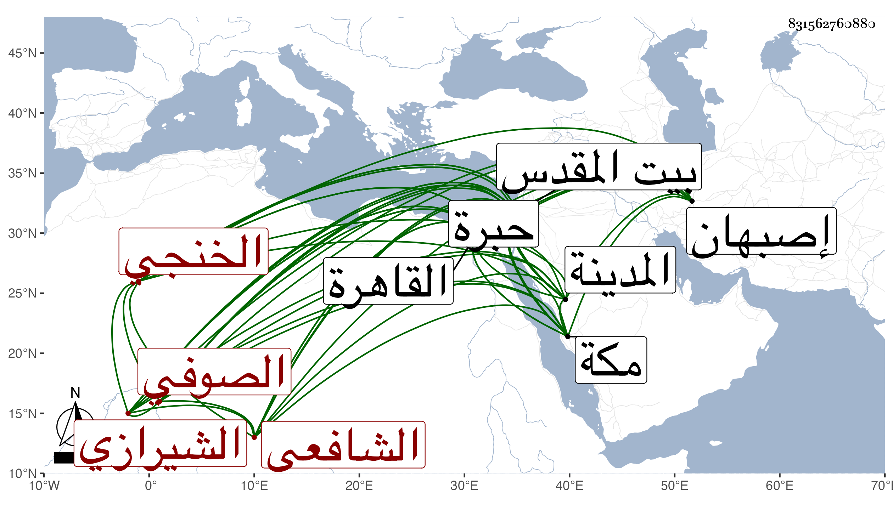

0902Sakhawi.DawLamic.ITO20230111-ara1.EIS1600.831562760880
Biography ID: 831562760880
580
فضل الله بن روزبهان بن فضل الله الأمين أبو الخير ابن القاضي بأصبهان أمين الدين الخنجي الأصل الشيرازي الشافعي الصوفي ويعرف بخواجه ملا . لازم جماعة كعميد الدين الشيرازي وتسلك بالجمال الأردستاني وتجرد معه وتقدم في فنون من عربية ومعان وأصلين وغيرها مع حسن سلوك وتوجه وتقشف ولطف عشرة وانطراح وذوق وتقنع ، قدم القاهرة فتوفيت أمه بها وزار بيت المقدس والخليل ومات شيخه الجمال ببيت المقدس فشهد دفنه ، وسافر إلى المدينة النبوية فجاور بها أشهرا من سنة سبع وثمانين ولقيني بها فسر بعد أن تكدر حين لم يجدني بالقاهرة مع أنه حسن له الاجتماع بالخيضري فما انشرح به وقرأ على البخاري بالروضة وسمع دروسا في الإصطلاح واغتبط بذلك كله ، وكان يبالغ في المدح بحيث عمل قصيدة بديعة يوم ختمه أنشدت بحضرتنا في الروضة أولها :
| روى النسيم حديث الأحباء | فصح مما روى أسقام أحشائي |
وهي عندي بخطه الحسن مع ما قيل نظما من غيره وكذا عمل أخرى في ختم مسلم وقد قرأه على أبي عبد الله محمد بن أبي الفرج المراغي حينئذ أولها :
| صححت عنكم حديثا في الهوى حسنا | أن ليس يعشق من لا يهجر الوسنا |
وهي بخطه أيضا في ترجمته من التاريخ الكبير ، وكتبت له إجازة حافلة افتتحتها بقولي : أحمد الله ففضل الله لا يجحد وأشكره فحق له أن يشكر ويحمد وأصلي على عبده المصطفى سيدنا محمد ، ووصفته بما أثبته أيضا في التاريخ المذكور وقال لي أنه جمع مناقب شيخه الأردستاني وأن مولده فيما بين الخمسين إلى الستين ثم لقيني بمكة في موسمها فحج ورجع إلى بلاده مبلغا إن شاء الله سائر مقاصده ومراده وبلغني في سنة سبع وتسعين أنه كان كاتبا في ديوان السلطان يعقوب لبلاغته وحسن إشارته .
